Private tours, hidden gems & things to do in Ise-Shima, guided by a local
Looking for the best things to do in Ise-Shima? Explore Japan's most sacred shrine and the hidden gems of the ria coastline — quiet fishing villages, ama divers and local food culture — on a fully private tour with an English-speaking local guide.
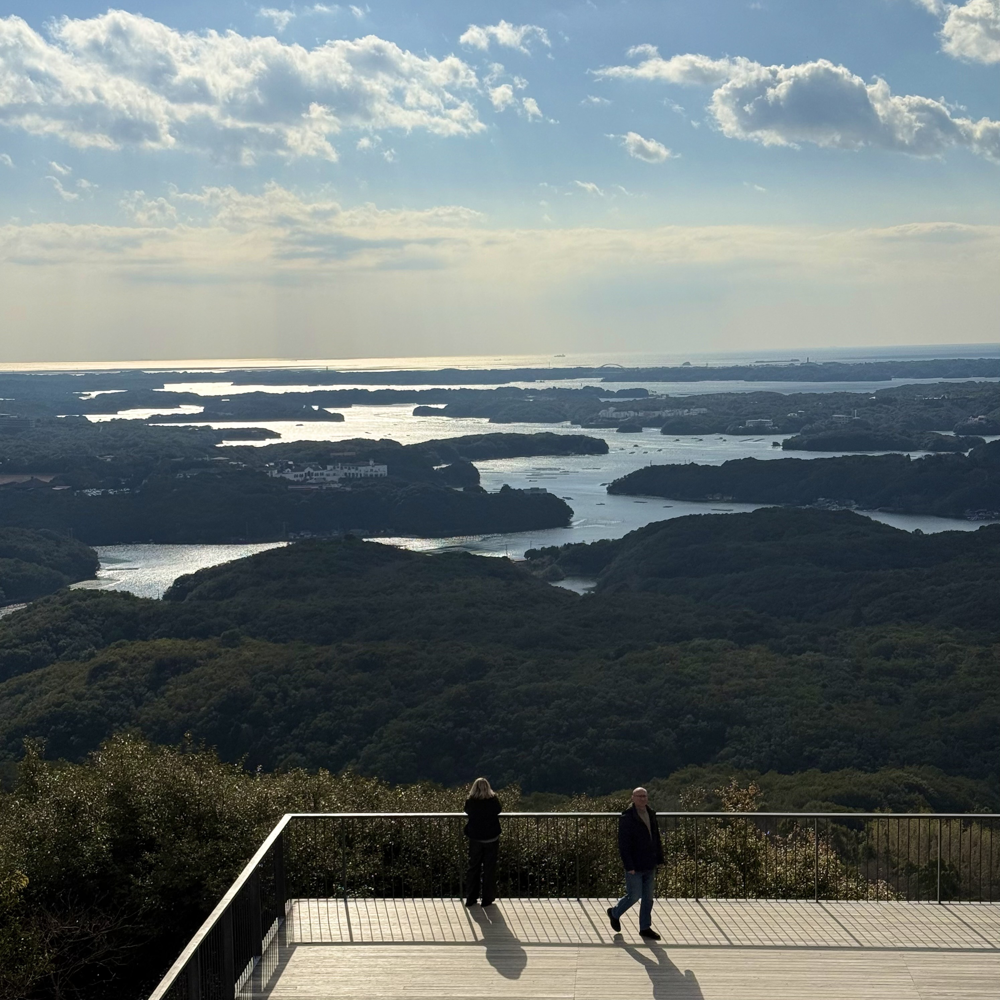
This is a fully private walking tour designed exclusively for you and your family.
You will explore each location on foot, with transportation between points provided by car.
The tour is planned to begin around 9:00 a.m and conclude around 5:00 p.m, without dinner included.
This tour follows a thoughtfully curated route, refined and tested by a local guide.
While the experience can be flexibly adjusted to suit your preferences, it is primarily conducted along a carefully designed itinerary to ensure a smooth and well-balanced journey.
The tour includes a harmonious blend of iconic highlights, such as Ise Grand Shrine, as well as hidden gems known mostly to locals.
It is designed to help you explore the Ise-Shima area in an efficient yet immersive way, going beyond the typical tourist experience.
Above all, I hope you will feel the unique atmosphere of this region.
In Ise-Shima, we call this "Shima Time" — a gentle, unhurried rhythm of life.
Meal costs, optional personal experience fees, and shopping expenses are not included.
Transportation between locations is provided by car at no additional charge.
Hotel pick-up and drop-off are available for guests staying in the Ise, Toba, and Shima areas.
For all other guests, pickup is available at Ugata Station or Iseshi Station.
Both stations can be reached from Osaka in about 2 to 2.5 hours by limited express train, with no transfers required.
Dinner can be added for an additional 6,000 JPY per person.
If you have any questions or special requests, please feel free to contact me. I would be very happy to help you plan a memorable day in Mie.
¥30,000~36,000 / per person* For groups of 4–5 people: ¥35,000~41,000 / person
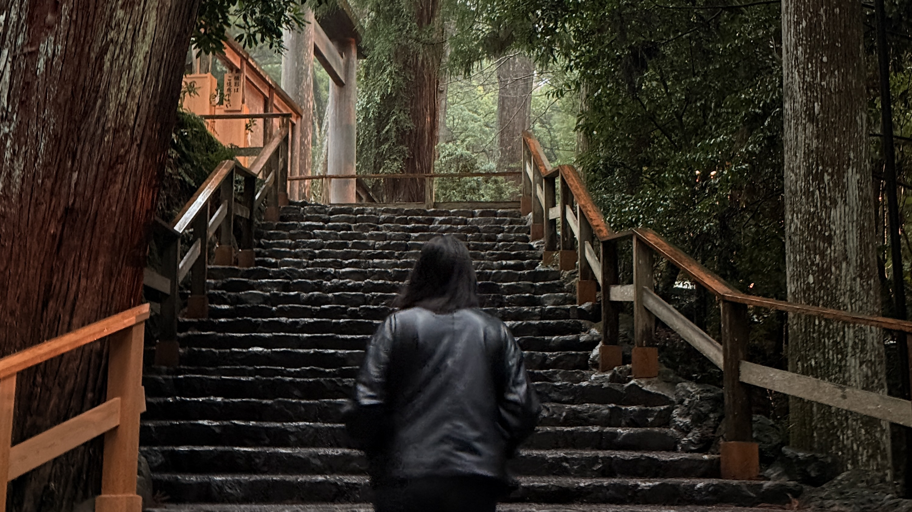
A private guided tour of Ise Jingu's Inner Shrine (Naiku) — Japan's most sacred Shinto site.
Learn proper worship etiquette, experience purification rituals, and discover stories you won't find in any guidebook.
Departs at 9:00 or 14:00. Guided portion at Naiku is approximately 2 hours.
Ise Jingu is Japan's holiest Shinto shrine — yet most visitors spend only an hour and leave without understanding what they have seen.
This tour focuses on the Inner Shrine (Naiku), home to Amaterasu, the sun goddess at the heart of the Shinto faith. With a knowledgeable local guide, you will move through the ancient forested approach at the right pace, gaining a deeper understanding of the worship rituals and spiritual significance that define this sacred place.
If you wish, you can also add an optional visit to the Outer Shrine (Geku) with car transportation (¥5,000 per person). When selected, the tour follows the traditional order: Geku → Naiku, adding approximately 1.5 hours to the experience.
After the guided tour, Okage Yokocho and Oharai-machi — the historic merchant streets just a short walk from Naiku — are yours to explore independently at your own pace.
Guided tour of Ise Jingu Inner Shrine (approx. 2 hours).
Optional: visit to the Outer Shrine (Geku) with car transportation (+approx. 1.5 hours · ¥5,000 / per person).
Pickup from Ise Station or accommodations in the Ise, Shima, and Toba areas.
Meal costs, personal shopping expenses, and optional activity fees are not included.
Hotel pick-up is available for guests staying in the Ise, Toba, and Shima areas.
Pickup at Iseshi Station is also available.
The tour concludes at the Inner Shrine (Naiku). Drop-off at your hotel is available upon request — please let us know in advance.
Maximum 5 guests. Comfortable walking shoes are required.
This tour is not suitable for guests with mobility impairments.
¥15,000 / per personYour complete travel companion for Ise-Shima, built by a local guide. Whether you're exploring by car or by rental bicycle, discover hidden spots, plan your itinerary, and navigate with confidence — everything you need, in one app.
This guide can be added to your home screen as a web app.

Inaka Tours began with a simple comment from someone I deeply respect: "I wish more people would come to this region."
That moment made me realize something important. This area is special, but there was no way for visitors to truly experience it. So I decided to study English and moved to Australia for two years.
Living overseas gave me many new experiences and helped me learn about different cultures — but it also made me appreciate Japan even more.
When I returned to Japan in October 2025, I decided to start Inaka Tours here.
This region doesn't have a long list of famous attractions. But I believe that's exactly the beauty of rural Japan.
As I explored this region more deeply, I realized its greatest charm isn't places — it's what we call "Shima time," a slow and relaxed atmosphere.
With Inaka Tours, my goal is to share it with visitors who want to experience the real Japan.
Leave everyday life behind and embrace "Shima time" in the beautiful Ise-Shima region — an unforgettable retreat experience during your trip to Japan.
I look forward to meeting you and sharing this special experience with you.
See more on Instagram
Instagram


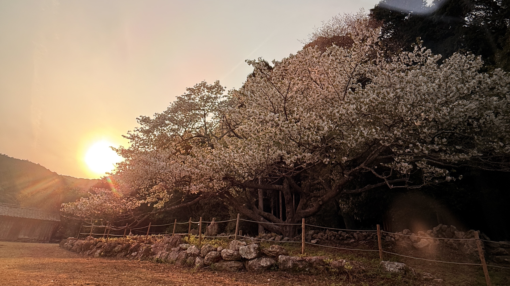
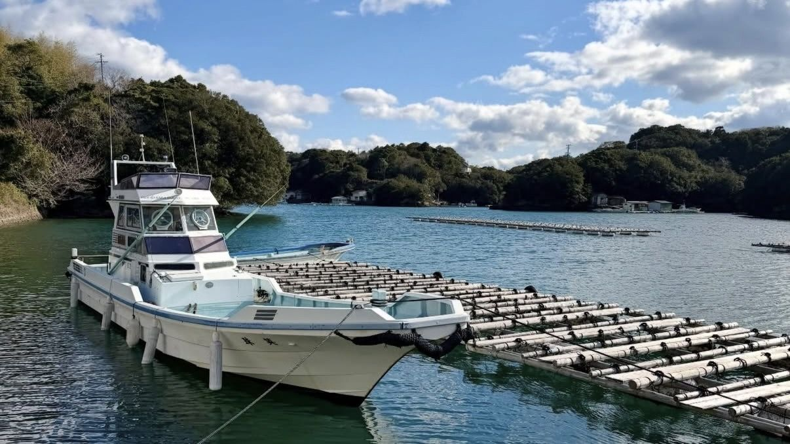
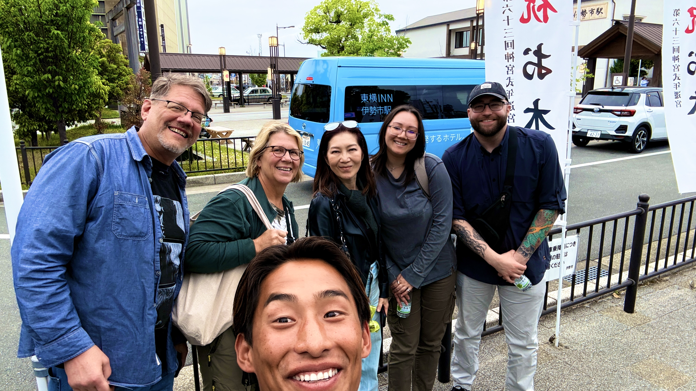
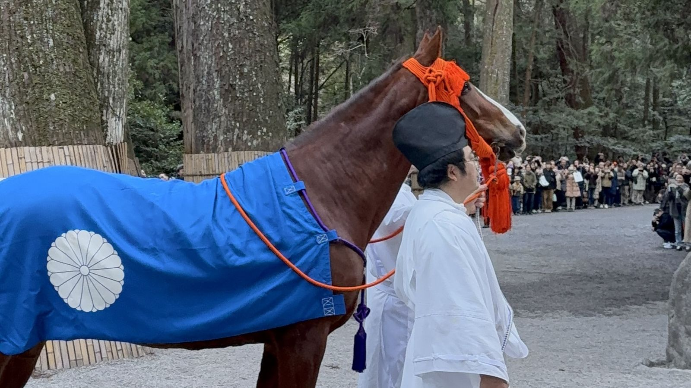
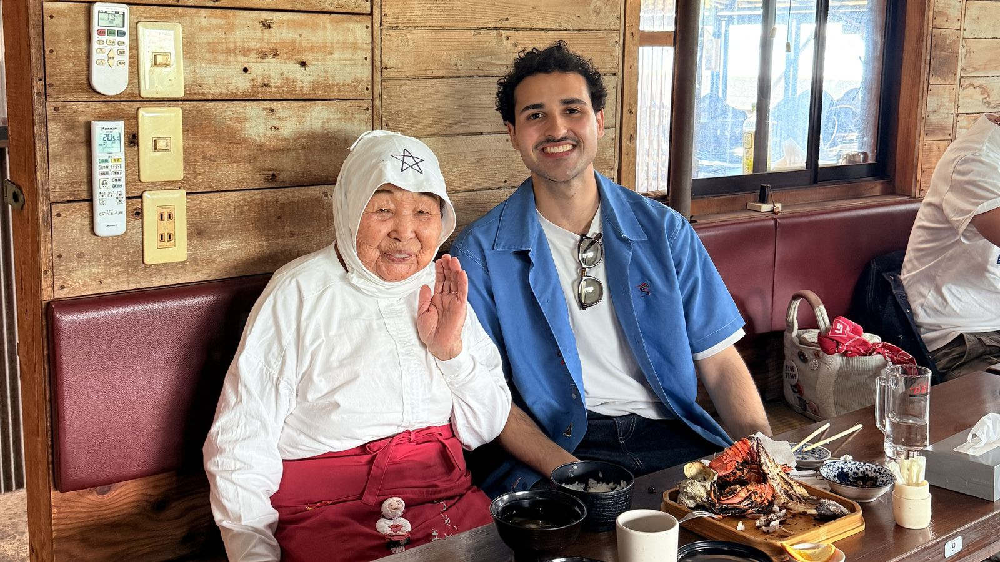
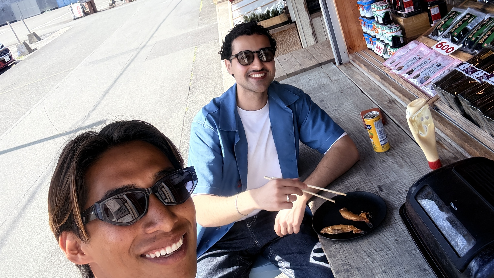
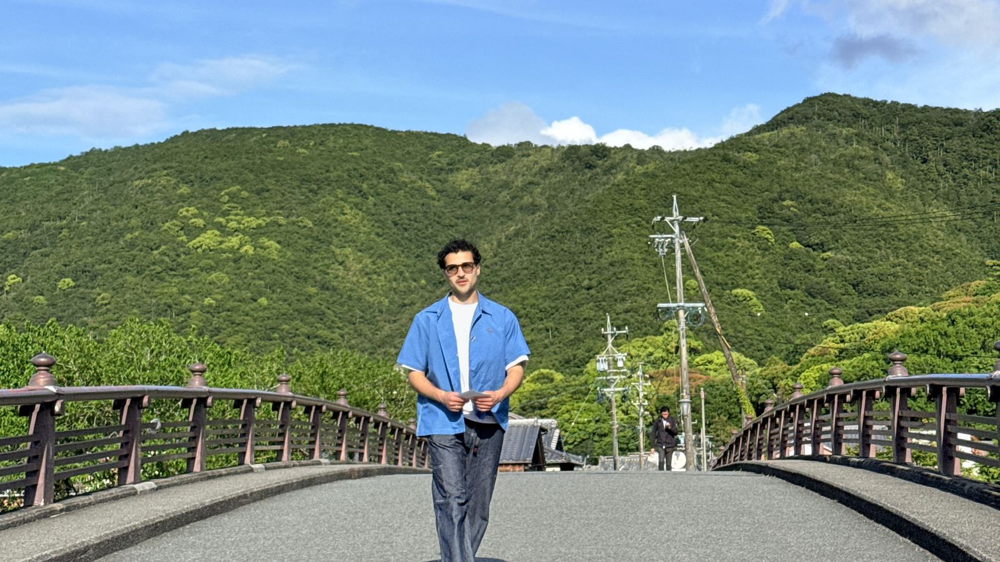

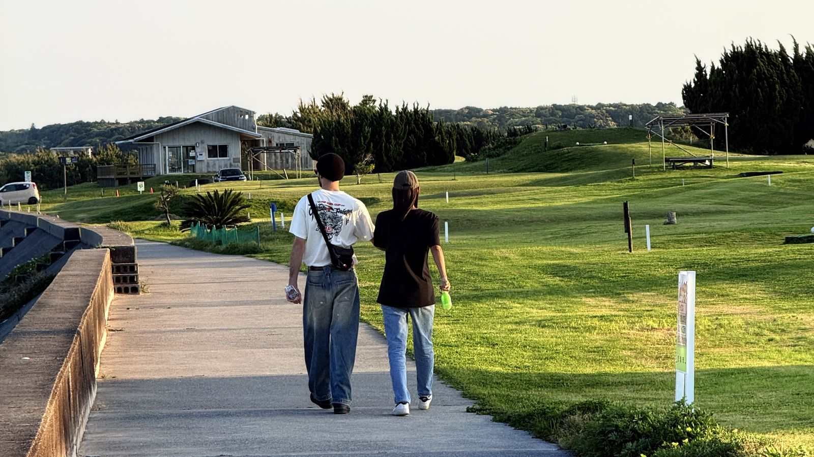
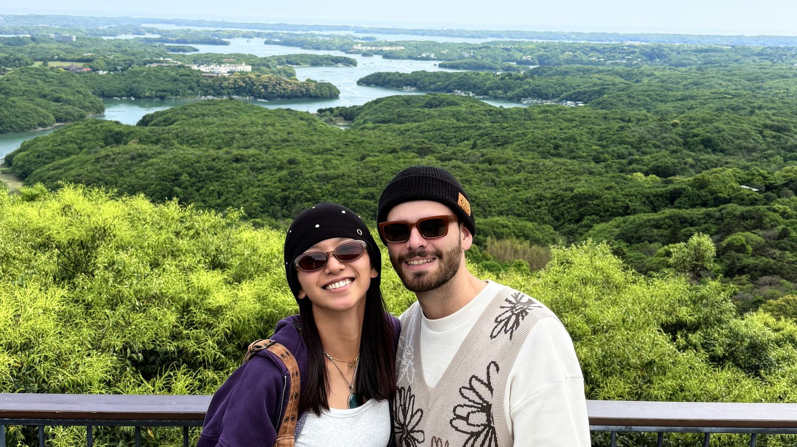
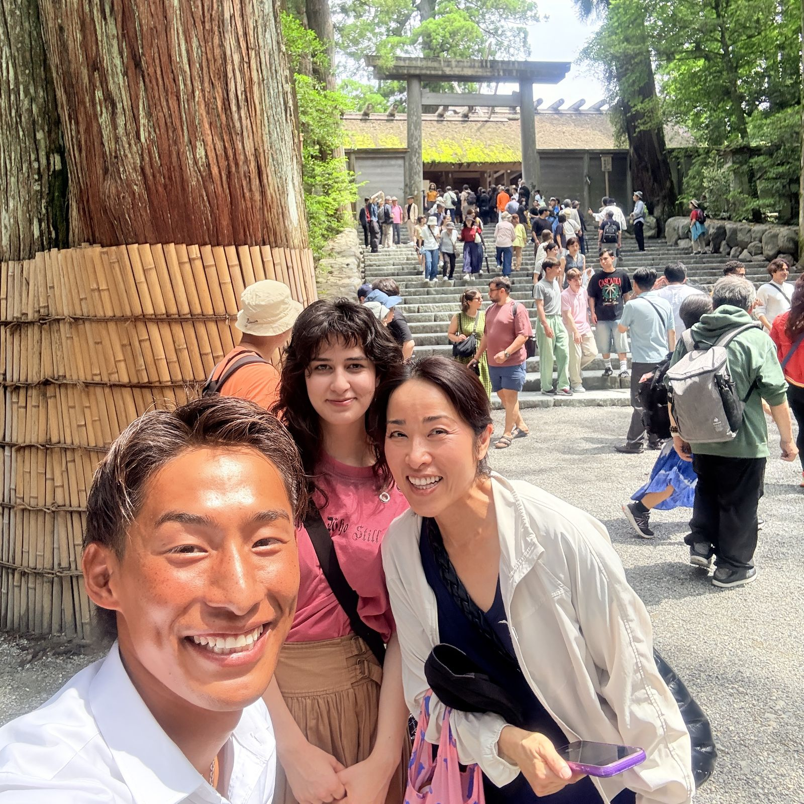


Questions, custom requests, or availability — send a message anytime.
{kind=link}
{kind=link}
{kind=link}
{kind=link}
{kind=link}
{kind=link}
{kind=link}
{kind=link}
{kind=link}
{kind=link}
{kind=link}